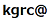

応募要領
チャレンジタスクの設定
対象とするナレッジグラフを用いて， 事件の犯人を推論（推理）し，犯人と判断した理由（動機や殺害方法など）の説明と共に示す．
タスクの実行条件
１．推論は，ナレッジグラフの使用する範囲を段階的に変えた条件下で行う．
a) 完全：すべてのナレッジグラフを使用する
b) 不完全(10%)：IDが368番以下の場面のみを使う．
c) 不完全(25%)：IDを288番以下のトリプルのみを使う．
２．ナレッジグラフを独自に拡張することも可能（常識知識の追加など）
３．対象ナレッジグラフに不具合があればプルリクエスト可（但し，スキーマ変更は来年以降とする）
提出物
応募シート（doc, pdf）に沿って以下の情報をご提供ください．
応募は本部門とアイデア部門に分かれています．アイデア部門は以下の１，２のみで結構です．
１．応募者に関する情報
２．推論・推理過程の説明
- プログラムのログなどを用いてポイントを解説してください．アイデアの場合は自由形式で結構です．
- どのIDまでの知識を使ったかや，推論・推理のために応募者が追加した知識について記載してください．
（ただし，追加した知識の公開は必須ではありません）
３．実行プログラム
- スタンドアロンアプリケーション，またはサービス
（ただし，ソースコードの提出は必須ではありません）
※応募シートの内容を記載したPDFファイルを電子メールにて以下にご提出下さい（シート作成に使用するソフトウェアは問いません）．
送付先：knowledge-graph.jp
審査基準（詳細は後日公開）
１．正しく犯人を当てているか？
２．説明が納得できるか？
３．技術的な工夫
- 推論の仕方
- 拡張した知識
４．評価観点
- 汎用性：一般的な知見となりうるか？
- 少ない知識をうまく使う vs. 多量の知識？
５．書類審査＋プレゼンで評価
※参加者による当日審査を実施する予定です．
チームから少なくとも1名は11/25の審査会にご参加ください（遠方の場合はオンライン発表も可）．
但し，応募多数の場合は，発表は書類審査による優秀作品に限らせていただきます．